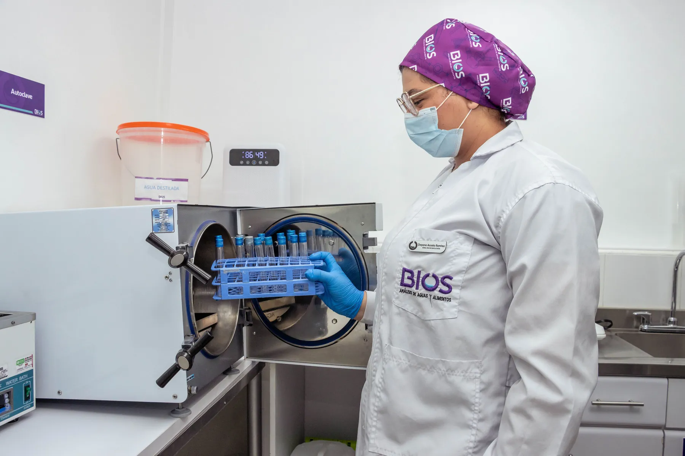
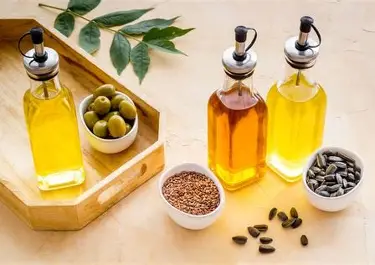
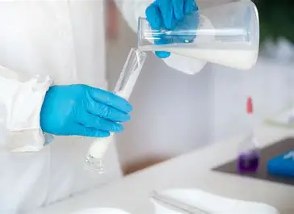
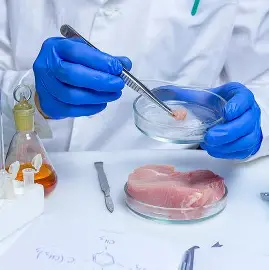
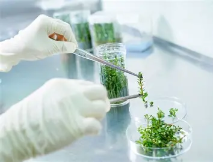
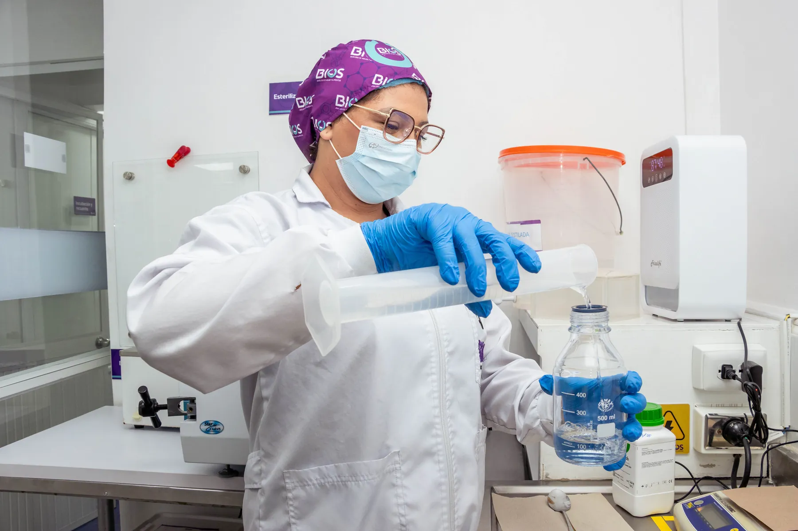
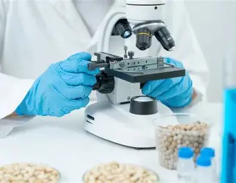
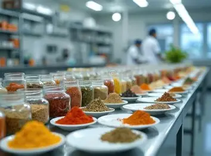
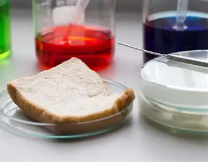

Bebidas
Industria cervecera y de gaseosas.
Sirviendo a la industria alimentaria con análisis de calidad en todo el territorio nacional.
Ofrecemos servicios especializados y soporte integral para distintos sectores, desde la materia prima hasta el producto final.
Industria cervecera y de gaseosas.

Sectores avícola, porcino, ganadero y bufalino.

Productores de aceites comestibles.

Industria de dulces y confites.

Industria láctea.

Productores de cárnicos procesados y embutidos.

Industria agrícola en general.

Productores y distribuidores de agua potable tratada.

Industrias harinera y de arroz.

Fabricantes de condimentos.

Industria panificadora.

Industria atunera.
Contamos con tecnología de punta que ofrece resultados oportunos.